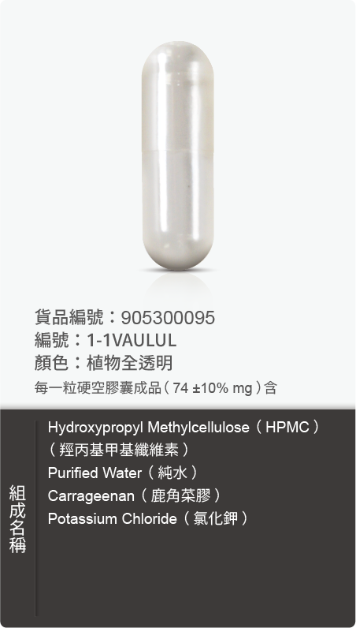
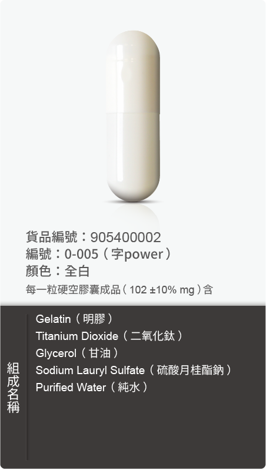

CAPSULES
動／植物膠囊
養顏美容、青春美麗、營養補給、促進新陳代謝、調節生理機能、幫助維持消化道機能、健康維持。
TYPES
先決定基材，
再決定尺寸。
膠囊的基材會直接影響素食與清真訴求、充填適應性與成本結構。兩種基材都提供 0 號到 4 號等常見尺寸。

HPMC CAPSULES
植物膠囊
以羥丙基甲基纖維素為基材，不含動物性成分，適用於素食、清真與植物性訴求的產品。
查看尺寸與樣式 →
GELATIN CAPSULES
動物膠囊
以明膠為基材，充填適應性與成本表現佳，是市面上最普遍使用的膠囊型式。
查看尺寸與樣式 →
ALL FORMATS
其他劑型與包材
錠劑、粉包、果凍、瓶器與各式鋁袋，回到總覽比較所有可選的形式。
回到劑型與包材 →官網資料僅供參考，詳情請洽百達醫顧問。
START A PROJECT
選好基材，
我們接著談規格。
提供內容物特性、預計填充量與素食需求，我們會協助確認合適的膠囊基材與尺寸。
討論膠囊開發